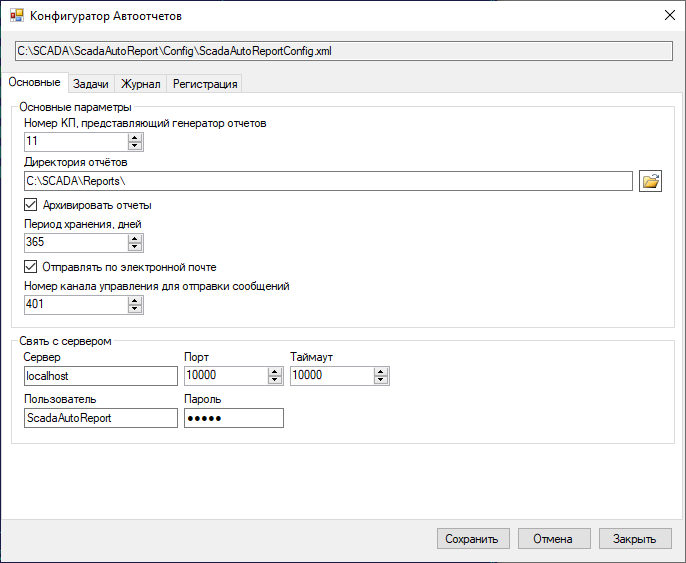
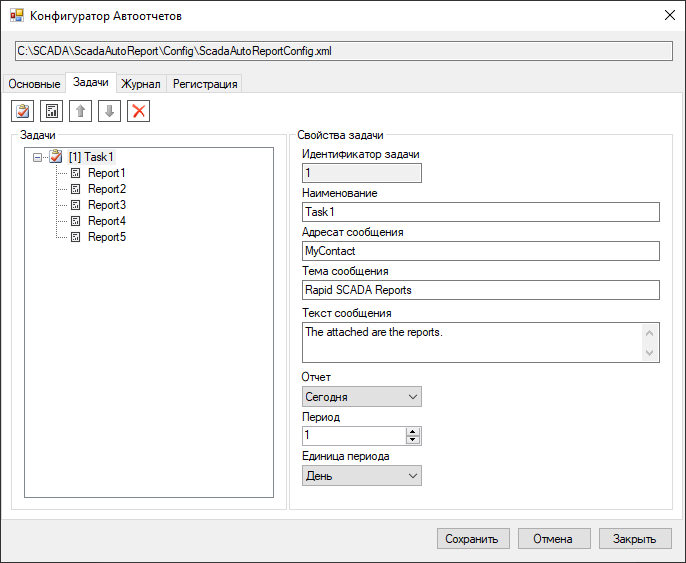
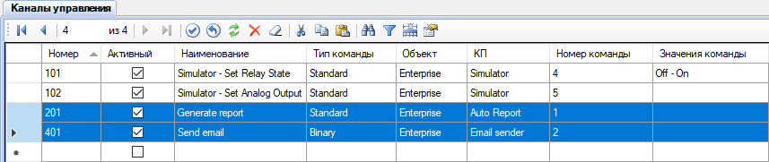
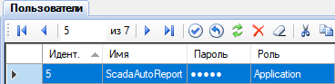
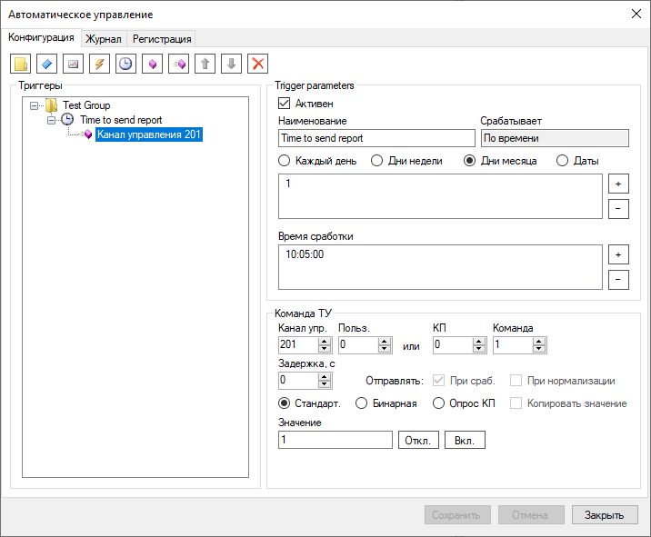
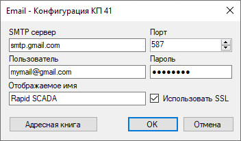

Приложение Автоотчёт предназначено для автоматического формирования различных отчётов, их сохранения на диск, а также рассылки по электронной почте. Расписание для генерации отчётов устанавливается с помощью Модуля автоматического управления. Отправка отчётов по электронной почте обеспечивается соответствующим драйвером KpEmail.dll, который входит в стандартную установку Rapid SCADA.
Поддерживаются следующие виды отчётов:
Автоотчёт работает как служба. Он подключается к Серверу и постоянно готов к приёму команд. Модуль автоматического управления, который работает в составе Сервера, в заданное время отправляет команду на выполнение задачи по формированию отчётов. По команде формируется набор отчётов и сохраняется на диск в виде файлов или архива. Если установлена соответствующая опция, приложение Автоотчёт передаёт команду Серверу на отправку сгенерированных отчётов по электронной почте.
Конфигурация Автоотчёта хранится в файле C:\SCADA\ScadaAutoReport\Config\ScadaAutoReportConfig.xml. Для редактирования конфигурации предназначено приложение ScadaAutoReportConfig.exe. Его внешний вид показан на следующих рисунках:


Для работы приложения Автоотчёт необходимо в проекте выполнить определённые настройки:
Действия 1, 2 и 3 показаны на следующих рисунках:



Настройки Модуля автоматического управления (пункт 4) показаны ниже:

Пример настройки Коммуникатора для работы отправки электронной почты (пункт 5) содержится в проекте DemoProject.ru-RU.rsproj. На следующем рисунке показаны свойства КП:

После завершения конфигурирования или изменения существующей конфигурации необходимо перезапустить службу Автоотчётов. Для этого запустите файл ScadaAutoReport\svc_restart.bat от имени администратора или воспользуйтесь консолью управления Windows, имя службы - ScadaAutoReportService.
Для проверки работоспособности можно запустить задачи на формирование отчётов через приложение Администратор. Для запуска задачи необходимо с помощью функции Генератор отправить стандартную команду ТУ на тот канал управления, который отвенчает за генерацию отчётов. В данном примере - канал номер 201. В качестве значения команды - идентификатор задачи. Корректность работы следует проверить по файлам журналов, которые расположены в директории C:\SCADA\ScadaAutoReport\Log\

Если приложение работает нормально, сформированные отчёты сохраняются в директории, указанной в основных параметрах приложения, по умолчанию C:\SCADA\Reports\